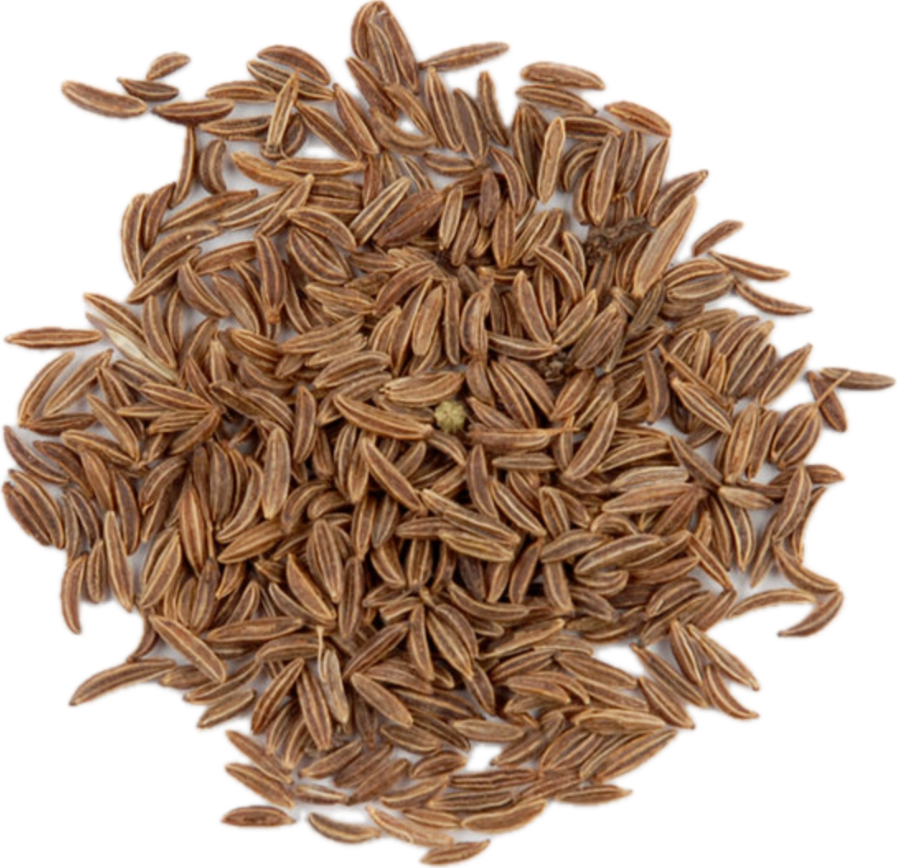

Carum carvi
Overview
Caraway is a biennial herb in the Apiaceae family, native to Europe, Asia, and North Africa. It produces small crescent-shaped seeds that have a warm, earthy flavor with hints of anise and citrus. Caraway seeds are commonly used as a spice in cooking and baking.
Cultural Overlap
Caraway seeds are a staple ingredient in Central and Eastern European cuisines, where they are used to flavor bread, sausages, and cabbage dishes. They are also used in Scandinavian and Middle Eastern cuisines. Additionally, caraway has a long history of use in traditional medicine for digestive health.